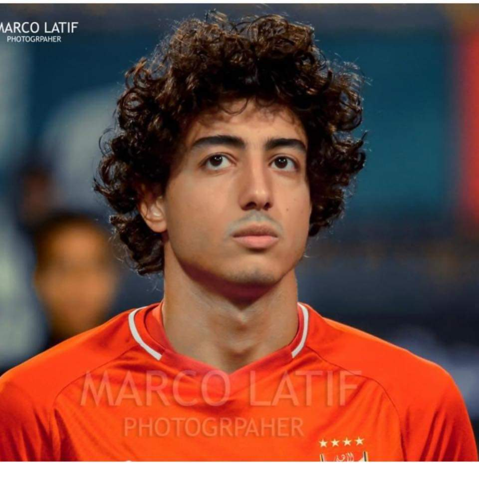
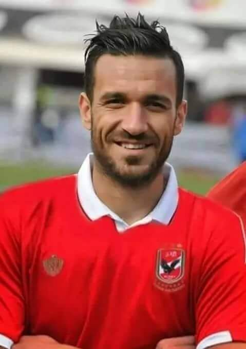

mohamed hany
(30)
mohamed hany
(30)

ali malol
(21)
ali malol
(21)

mohamed el shenawy
(16)
تأسس النادي الأهلي بتاريخ 24 أبريل 1907
على يد عديد من كبار الشخصيات في مصر مثل عمر لطفي بك وأمين سامي باشا ومصطفى كامل وطلعت حرب،
وتأسس كنادٍ للشباب الوطنيين المصريين، ومنذ إنشائه اجتمع فيه المصريون لقضاء أوقاتهم وممارسة الرياضة،
بعد ذلك تم إنشاء مجلس إدارة للنادي برئاسة الإنجليزي ميشيل إنس،
Al-Ahly Club was founded on April 24, 1907 At the hands of many dignitaries in Egypt such as Omar Lotfi Bey, Amin Sami Pasha, Mustafa Kamel and Talaat Harb, A club was established as a club for Egyptian patriots, and since its inception, Egyptians have gathered in it to spend their time and practice sports, After that, a board of directors was established for the club headed by Englishman Michael Ins
(41) الدوري المصري الممتاز
(36)كاس مصر
(11)كاس السوبر المصري
(15)دوري منطقه القاهره
(7)كاس السلطان حسن
(1)كاس الجمهوريه العربيه المتحده
(1)كاس الاتحاد المصري التنشيطيه
(8)دوري ابطال افريقيا
(1)كاس الكونفدرليه الافريقيه
(1)كاس افريقيا للانديه
(6)كاس السوبر الافريقي
(1)كاس الافروسيه
(1)كاس العرب للانديه الابطال
(1)البطوله العربيه للانديه الفائزه بالكؤوس
(2)كاس السوبر العربي
(41) Egyptian Premier League
(36) Egypt Cup
(11) Egyptian Super Cup
(15) Cairo District League
(7) Sultan Hassan Cup
(1) The United Arab Republic Cup
(1) Egyptian Federation refresher cup
(8) African Champions League
(1) The African Confederation Cup
(1) The African Clubs Cup
(6) African Super Cup
(1) The Afrosian Cup
(1) Arab Champions Cup
(1) The Arab Cup Winners Club Championship
(2) Arab Super Cup